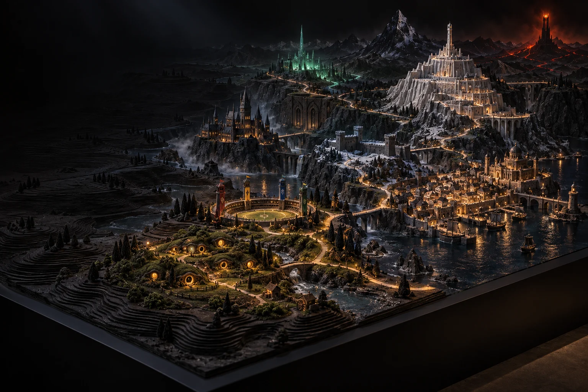

Bring us a subject
We research it, find the story inside it and turn that research into an accessible interactive work.
We create educational games and interactive longreads for museums, universities and media.
See how we work ↓
People rarely remember what they were told. They remember what they discovered.
We discuss what your audience should understand, feel or be able to do at the end.
We find the strongest format, build three distinct approaches and let you choose the one with the most potential.
We refine the chosen idea into a polished, tested experience that is ready for your channels and your audience.
We research it, find the story inside it and turn that research into an accessible interactive work.
We transform your existing article, archive or exhibition material into an interactive longread or game.
We work with illustrators and artists, with AI-assisted workflows, or with a mix of both. Depending on the project, context and your needs.
Tell us a little about the subject, the audience and where the finished work will live. Rough ideas are welcome.